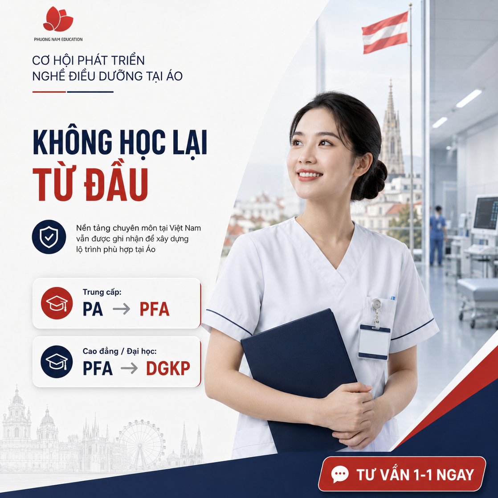
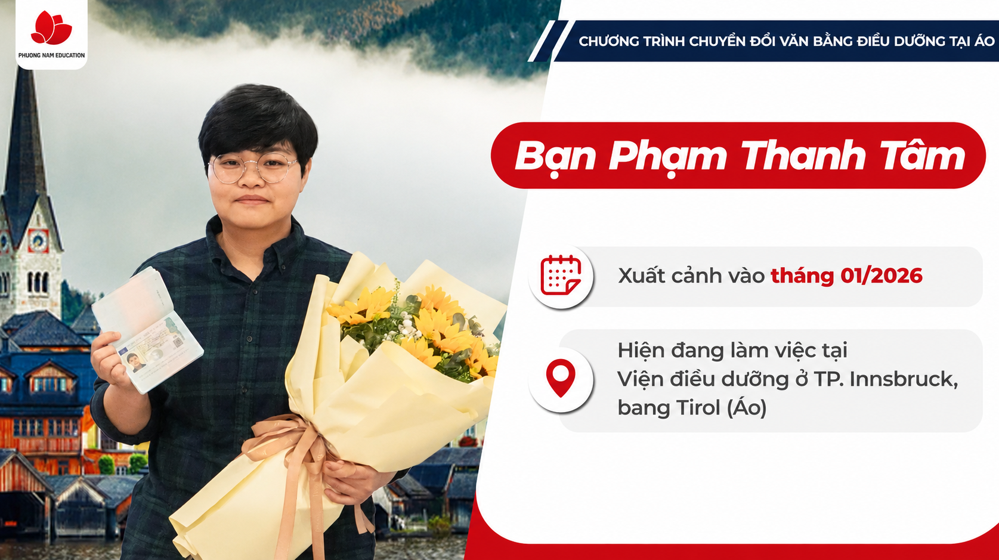

Các chiến dịch đang hoạt động, đánh giá theo từng mục tiêu và hiệu quả của từng creative.
| Creative | Tệp | Mess | CPMess | Chi tiêu | Nhận xét |
|---|---|---|---|---|---|
| Photo "Đài thọ chi phí" (Trung cấp) | VN [18–35] | 529 | 86.485đ | 45,7tr | Giữ chạy tiếp |
| Photo "Cơ hội làm việc BV Vorarlberg" | Interest Điều dưỡng A/B | 395 | 84.376đ | 33,3tr | Giữ chạy tiếp |
| Album "Đăng ký buổi trao đổi" | VN [18–35] | 13 | 148.613đ | 1,9tr | Đắt gấp ~1,5 lần, cân nhắc tắt |
| Album "Đăng ký buổi trao đổi" | Interest ĐH/CĐ × Tiếng | 8 | 236.230đ | 1,9tr | Đắt nhất, nên tắt |
| Reels "Cơ hội học & làm tại Áo" | VN [18–35] | 7 | 75.213đ | 0,5tr | Gần như không ra Mess |
| Photo "Đài thọ chi phí" (Trung cấp) | Interest Điều dưỡng A/B | 0 | — | 2.419đ | Không phân phối |
| Creative | Tệp | Phản hồi | Giá / Phản hồi | Nhận xét |
|---|---|---|---|---|
| TĐ Chung — Video | VN [18–40] | 1.694 | 4.536đ | Giữ chạy tiếp |
| TĐ Chung — Video | Interest Điều dưỡng | 708 | 4.524đ | Giữ chạy tiếp |
| TĐ Chung — Ảnh tĩnh | Interest Điều dưỡng | 595 | 5.315đ | Ổn nhưng đắt hơn video |
| TĐ Chung — Ảnh tĩnh | VN [18–40] | 289 | 5.906đ | Đắt nhất, cân nhắc tắt |
Năm hướng nội dung mới, mỗi post tập trung một thông điệp và gắn lead magnet rõ ràng để chuyển follower thành lead có data. Nhấn vào từng post để xem chi tiết.
Nhiều điều dưỡng viên nghĩ rằng muốn làm việc tại châu Âu đồng nghĩa với việc phải học lại toàn bộ từ đầu. Nhưng với Chương trình Chuyển đổi Văn bằng Điều dưỡng tại Áo, nền tảng 3–4 năm học tập và tích lũy kinh nghiệm chuyên môn tại Việt Nam vẫn được ghi nhận để xây dựng lộ trình phù hợp. Bằng cấp của bạn hoàn toàn được trân trọng và bảo toàn giá trị.
Tại Áo, bạn được thẩm định bằng cấp và đào tạo bổ sung chuyên môn để chuyển đổi văn bằng, tiếp tục làm đúng nghề điều dưỡng theo lộ trình phù hợp với bằng đầu vào:
Hệ Trung cấp: lộ trình PA → PFA Hệ Cao đẳng / Đại học: lộ trình PFA → DGKPĐây là hành trình chuyển đổi văn bằng để nâng tầm sự nghiệp, không phải bắt đầu lại từ con số 0. Để biết lộ trình phù hợp với tấm bằng của mình, nhắn tin ngay để được tư vấn 1-1.
B2 là ĐÍCH ĐẾN của lộ trình, không phải điều kiện để bắt đầu.
Chương trình xây dựng hệ thống đào tạo khép kín từ con số 0: học viên xuất phát từ A1, đi vững chắc qua từng cấp độ A2, B1, B2 và tham gia kỳ thi chứng chỉ quốc tế ÖSD ngay tại Phương Nam Education, giúp loại bỏ hoàn toàn áp lực săn suất thi tự do bên ngoài.
Học một nơi, luyện thi một nơi, thi một nơi, điều khiến các ứng viên mệt mỏi nhất, thì ở đây nằm gọn trong cùng một hệ thống.
[Connect đến việc học tiếng Đức từ giờ giúp phát triển sự nghiệp tại Áo ra sao]
Nhắn tin để đăng ký bài test trình độ tiếng Đức miễn phí.
Một quyết định nghiêm túc luôn cần đầy đủ thông tin. Hãy dành một buổi để hỏi tất cả những điều bạn đang băn khoăn:
Với bằng cấp hiện tại, mình nên đi lộ trình nào? Lộ trình học tiếng Đức và thi ÖSD diễn ra như thế nào? Gói đài thọ tại Việt Nam gồm những gì? Có hợp đồng làm việc trước khi xuất cảnh không?Hình thức: qua Zoom, có hỏi đáp trực tiếp với đại diện chương trình.
Để bảo đảm chất lượng tương tác cho từng ứng viên, số lượng tham gia sẽ được giới hạn. Đăng ký ngay để giữ chỗ!
Bạn đã chọn Điều dưỡng vì mong muốn chăm sóc con người. Trong hành trình ấy, mỗi điều dưỡng viên đều có những ước mơ rất riêng: được phát triển chuyên môn, được làm việc trong môi trường chuyên nghiệp và tiếp tục gắn bó với nghề mình yêu theo cách bền vững hơn.
Chương trình Chuyển đổi Văn bằng Điều dưỡng tại Áo mở ra một lựa chọn dành cho những điều dưỡng viên Việt Nam mong muốn tiếp tục đúng nghề trong hệ thống y tế châu Âu chuyên nghiệp, làm việc 37–40 giờ mỗi tuần và 5–6 tuần nghỉ phép hưởng nguyên lương mỗi năm, đủ thời gian để vừa phát triển sự nghiệp, vừa tận hưởng cuộc sống của mình.
Bởi chăm sóc người khác là một nghề đáng tự hào, và những người làm nghề ấy cũng xứng đáng có nhiều cơ hội phát triển hơn cho chính mình. Nhắn tin ngay để đăng ký Buổi tư vấn 1-1 miễn phí về chương trình.
Không có minh chứng nào rõ ràng hơn sự thành công của những người đi trước. Phương Nam Education vô cùng tự hào khi được đồng hành và chứng kiến khoảnh khắc các điều dưỡng viên Việt Nam chính thức đặt chân đến Áo, bắt đầu hành trình nâng tầm sự nghiệp quốc tế.
Hãy cùng nhà PNE nhìn lại những cột mốc tự hào của các điều dưỡng viên vừa xuất cảnh thành công:
Điều dưỡng viên … Tốt nghiệp chuyên ngành Điều dưỡng, hệ …, trường … Ngày xuất cảnh: … Đơn vị công tác tại Áo: …Mỗi tấm hộ chiếu được trao tay, mỗi chuyến bay cất cánh là lời khẳng định mạnh mẽ nhất: Lộ trình Chuyển đổi Văn bằng Điều dưỡng tại Áo của Phương Nam Education là hoàn toàn minh bạch, rõ ràng và chắc chắn.
Đăng ký buổi tư vấn 1-1 miễn phí ngay để bắt đầu lộ trình của riêng bạn!
Một số mẫu visual minh hoạ cho hướng nội dung ở trên, giúp hình dung rõ hơn về cách thiết kế đồng bộ màu sắc, bố cục ... khi triển khai thực tế.

